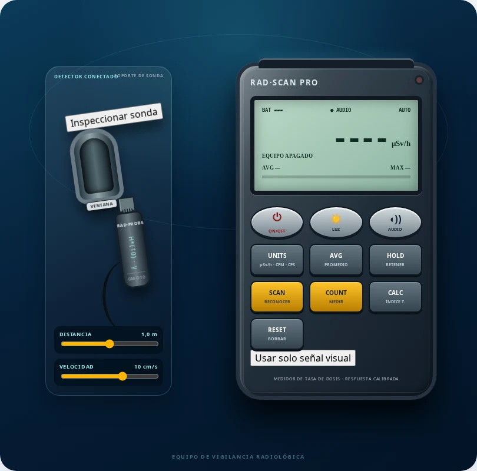
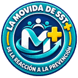

La lectura principal para vigilancia del campo
Expresa tasa de dosis. En vigilancia ocupacional puede utilizarse el equivalente de dosis ambiental H*(10) como magnitud operacional, con instrumento adecuado y calibrado.
LABORATORIO DE HIGIENE OCUPACIONAL
Practica cómo medir la tasa de dosis, buscar una fuente, evaluar la contaminación superficial y calcular el índice de transporte.

PRÁCTICA EXCLUSIVA · INTEGRANTES
Usa la cédula y el código recibidos al registrarte.
Olvidé mi código de integranteLa Movida de SST Plus verifica tu cédula y tu código en el registro de integrantes. Si tienes una consulta sobre tus datos o necesitas ayuda con el acceso, escribe a info@movidasst.com.

La Movida de SST PlusLaboratorio VirtualSIMULADOR DE RADIACIONES IONIZANTES
Instrumento didáctico para vigilancia radiológica ocupacional, con lectura principal en µSv/h.
¿QUÉ NECESITAS EVALUAR?
POR QUÉ:
QUÉ DEBES OBSERVAR:
Adecuado para reconocimiento del campo y tasa de equivalente de dosis ambiental. No sustituye la dosimetría personal.
BASES PARA INTERPRETAR
Expresa tasa de dosis. En vigilancia ocupacional puede utilizarse el equivalente de dosis ambiental H*(10) como magnitud operacional, con instrumento adecuado y calibrado.
Son cuentas por minuto o segundo. Sirven para detectar incrementos y evaluar contaminación con una sonda apropiada; no se convierten universalmente a µSv/h.
Se mide antes del trabajo y bajo condiciones comparables. La tasa neta es la lectura bruta menos el fondo.
Modelo didáctico con conteos de Poisson independientes y aproximación normal (α y β del 5 %). Referencia conceptual ISO 11929-1:2025. El umbral de decisión permite establecer si el efecto es reconocido; el límite de detección evalúa si el procedimiento tiene sensibilidad suficiente.
Para Ḣ*(10) se requiere un medidor de tasa de dosis con respuesta energética adecuada. La pancake se reserva para contaminación y búsqueda cualitativa en CPS/CPM.
Un detector portátil permite comparar puntos con el fondo, reconocer gradientes y localizar una fuente. La búsqueda debe planificarse y aplicar tiempo, distancia y blindaje.
La dosis estimada depende de la tasa y del tiempo de permanencia. Un nivel operativo de investigación no es un límite legal instantáneo ni sustituye el dosímetro personal.
Se utiliza la tasa máxima a 1 m de la superficie externa expresada en mSv/h, se multiplica por 100 y se redondea hacia arriba a la primera decimal. No es el índice de criticidad.
La dependencia energética, el tiempo muerto y la saturación impiden usar este montaje para dosimetría de haces. Se requiere una cámara de ionización o instrumento específico.